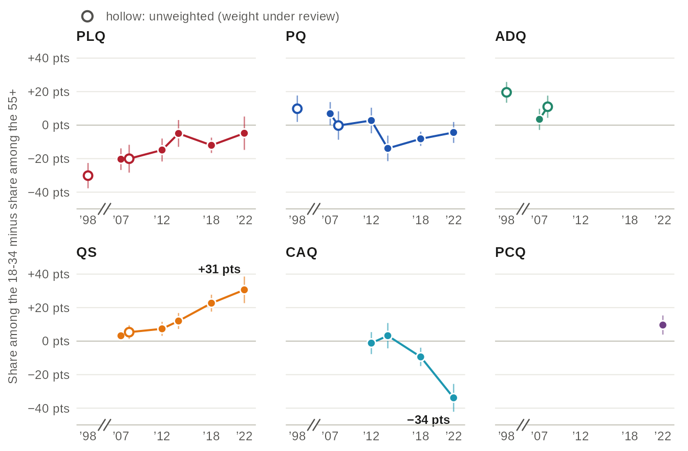
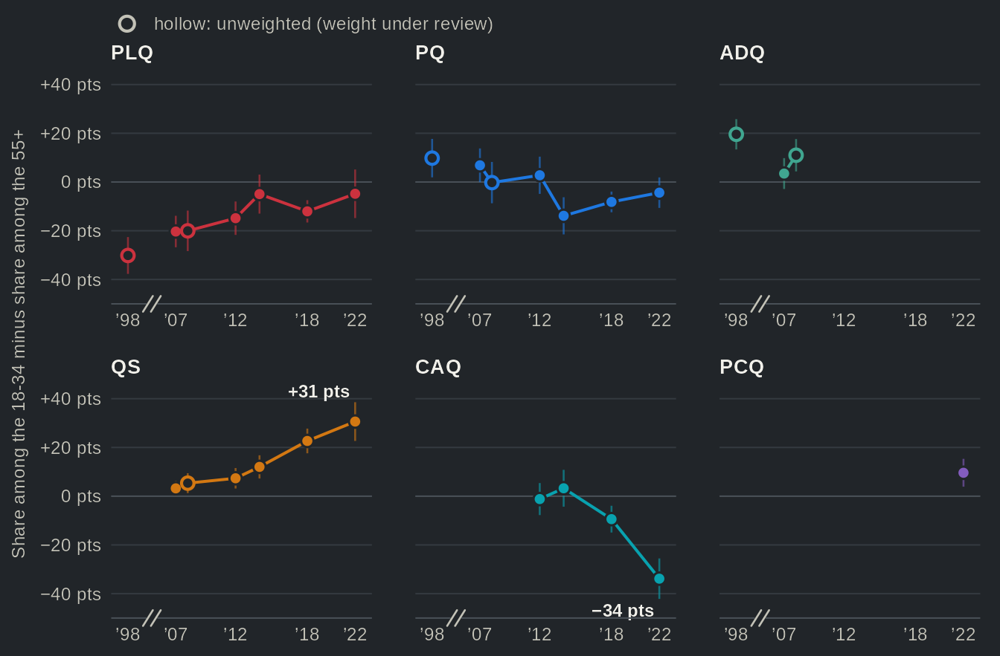

From two parties to four: Quebec's party system, 1998-2022
Source:vignettes/articles/realignment.Rmd
realignment.RmdIn 1998 the PQ and the PLQ took 86% of the valid votes. In 2022 five parties took more than 12% each, and the effective number of parties (official results) rose from 2.6 to 4.0. The surveys show where this happened: among francophones. Their effective number of parties went from 2.8 in 1998 (the CROP and CREATEC polls, which interviewed francophones only and are unweighted) to 3.9 in the 2022 Quebec Election Study, as their vote split among the PQ, the CAQ, Québec solidaire and the PLQ. Non-francophones kept voting PLQ: 72% of them in 2018, against 12% of francophones. The CAQ won that year with 41% of the francophone vote and 12% of the other voters.
The data
Every figure on this page uses one pooled variable,
vote_choice, restricted to the vote reported after the
election (types):
h <- qes_harmonize(
studies = qz_studies,
targets = c("vote_choice", "lang_mother", "age_group3"),
types = list(vote_choice = "recall"),
missing = "reasons", quiet = TRUE
)A weighted share with its confidence interval, within one study, is a
qes_design() and a call to the survey package:
d18 <- qes_design(h[h$study == "qes2018", ], weight = "weight_post")
d18 <- subset(d18, !is.na(vote_choice) & !is.na(lang_mother))
svyby(~I(vote_choice == "CAQ"), ~lang_mother, d18, svyciprop,
method = "logit", vartype = "ci")
#> lang_mother I(vote_choice == "CAQ") ci_l ci_u
#> French French 0.4114613 0.38603333 0.4373710
#> English English 0.1101960 0.07564846 0.1578270
#> Other Other 0.1717929 0.10011622 0.2788822The figures repeat this for every study, with the helpers of _data.R.
The estimates of each study are made within that study and never pooled
across studies.
Francophones fragmented; non-francophones stayed with the PLQ


Source: qesR, pooled vote_choice (reported vote) of one Quebec Election Study per election and the 1998 polls (CROP and CREATEC, francophones only, unweighted; their recontact over-selected undecided voters and refusers); official results of Élections Québec. Effective number of parties = 1 / sum of squared shares, with the PV, ON and other parties counted as one. Bands: 95% confidence intervals. Weighted with each study's post-election weight; hollow dots (1998, 2008): unweighted, weight under review. The x axis is in years, with a break between 1998 and 2007. The Durand panels are in the table view.
Table view
| Election | Study | Group | Effective number [95% CI] | n | Official, all voters | Weighting |
|---|---|---|---|---|---|---|
| 1998 | 1998 polls | Francophones | 2.78 [2.67, 2.88] | 1126 | 2.58 | unweighted (weight under review) |
| 1998 | 1998 polls | Non-francophones | n < 30 | 0 | 2.58 | unweighted (weight under review) |
| 2007 | QES 2007 | Francophones | 3.54 [3.39, 3.70] | 1525 | 3.47 | weighted |
| 2007 | QES 2007 | Non-francophones | 2.53 [1.94, 3.12] | 163 | 3.47 | weighted |
| 2007 | 2007 panel | Francophones | 3.45 [3.34, 3.56] | 1337 | 3.47 | unweighted (weight under review) |
| 2007 | 2007 panel | Non-francophones | 1.78 [1.49, 2.06] | 155 | 3.47 | unweighted (weight under review) |
| 2008 | QES 2008 | Francophones | 3.12 [2.96, 3.29] | 771 | 3.03 | unweighted (weight under review) |
| 2008 | QES 2008 | Non-francophones | 1.58 [1.32, 1.84] | 127 | 3.03 | unweighted (weight under review) |
| 2012 | QES 2012 | Francophones | 3.12 [2.93, 3.31] | 1094 | 3.60 | weighted |
| 2012 | QES 2012 | Non-francophones | 2.14 [1.75, 2.53] | 180 | 3.60 | weighted |
| 2012 | 2012 panel | Francophones | 3.42 [3.20, 3.64] | 576 | 3.60 | unweighted (weight under review) |
| 2012 | 2012 panel | Non-francophones | 2.31 [1.59, 3.03] | 57 | 3.60 | unweighted (weight under review) |
| 2014 | QES 2014 | Francophones | 3.68 [3.51, 3.84] | 981 | 3.38 | weighted |
| 2014 | QES 2014 | Non-francophones | 1.34 [1.15, 1.54] | 201 | 3.38 | weighted |
| 2018 | QES 2018 | Francophones | 3.62 [3.45, 3.78] | 1656 | 3.88 | weighted |
| 2018 | QES 2018 | Non-francophones | 1.85 [1.63, 2.06] | 359 | 3.88 | weighted |
| 2018 | 2018 panel | Francophones | 3.48 [3.11, 3.85] | 560 | 3.88 | weighted |
| 2018 | 2018 panel | Non-francophones | 2.02 [1.64, 2.40] | 143 | 3.88 | weighted |
| 2022 | QES 2022 | Francophones | 3.92 [3.64, 4.20] | 883 | 3.99 | weighted |
| 2022 | QES 2022 | Non-francophones | 2.93 [1.94, 3.92] | 121 | 3.99 | weighted |
What to notice:
- Over the whole period both lines rise, the official one from 2.6 to 4.0 and the francophone one from 2.8 to 3.9, but not election by election: from 2008 to 2012 the official number rises (3.0 to 3.6) while the francophone one stays at 3.1, and in 2014 the official number falls (3.4) while the francophone one rises (3.7). The first peak, in 2007, is the three-way race of the PQ, the PLQ and the ADQ.
- Among non-francophones the vote stays concentrated, with an effective number between 1.3 and 2.5 from 2007 to 2018. It reaches 2.9 in 2022, when the PLQ fell to 54% of their vote, but the interval runs from 1.9 to 3.9: only 121 non-francophone voters answered, so the size of the jump is uncertain.
- The survey line runs close to the official one, but not on it: surveys over-report some parties (see Survey vs official results).
Each party’s vote, francophones and the rest


Source: qesR, pooled vote_choice (reported vote), one Quebec Election Study per election and the 1998 polls (francophones only). Tick: official share of valid votes, all voters. Bars: 95% confidence intervals (logit). Weighted; hollow dots (1998, 2008): unweighted, weight under review. Cells of fewer than 30 respondents are not drawn. The x axis is in years, with a break between 1998 and 2007. The ADQ merged into the CAQ in 2012; the two stay separate parties here. The PCQ, the Durand panels and the other parties are in the table view.
Table view
| Party | Election | Study | Group | Share of reported vote [95% CI] | n | Official, all voters | Weighting | Grade |
|---|---|---|---|---|---|---|---|---|
| PLQ | 1998 | 1998 polls | Francophones | 34.1 [31.4, 36.9] | 1126 | 43.6 | unweighted (weight under review) | comparable |
| PLQ | 2007 | QES 2007 | Francophones | 20.1 [17.9, 22.6] | 1525 | 33.1 | weighted | comparable |
| PLQ | 2007 | QES 2007 | Non-francophones | 58.4 [48.1, 68.1] | 163 | 33.1 | weighted | comparable |
| PLQ | 2007 | 2007 panel | Francophones | 23.5 [21.3, 25.8] | 1337 | 33.1 | unweighted (weight under review) | approximate |
| PLQ | 2007 | 2007 panel | Non-francophones | 73.5 [66.1, 79.9] | 155 | 33.1 | unweighted (weight under review) | approximate |
| PLQ | 2008 | QES 2008 | Francophones | 32.7 [29.5, 36.1] | 771 | 42.1 | unweighted (weight under review) | comparable |
| PLQ | 2008 | QES 2008 | Non-francophones | 78.7 [70.8, 85.0] | 127 | 42.1 | unweighted (weight under review) | comparable |
| PLQ | 2012 | QES 2012 | Francophones | 15.5 [13.2, 18.0] | 1094 | 31.2 | weighted | identical |
| PLQ | 2012 | QES 2012 | Non-francophones | 65.5 [57.3, 72.8] | 180 | 31.2 | weighted | identical |
| PLQ | 2012 | 2012 panel | Francophones | 22.7 [19.5, 26.3] | 576 | 31.2 | unweighted (weight under review) | approximate |
| PLQ | 2012 | 2012 panel | Non-francophones | 63.2 [50.0, 74.6] | 57 | 31.2 | unweighted (weight under review) | approximate |
| PLQ | 2014 | QES 2014 | Francophones | 24.2 [21.3, 27.4] | 981 | 41.5 | weighted | comparable |
| PLQ | 2014 | QES 2014 | Non-francophones | 86.0 [78.0, 91.4] | 201 | 41.5 | weighted | comparable |
| PLQ | 2018 | QES 2018 | Francophones | 12.2 [10.7, 13.9] | 1656 | 24.8 | weighted | comparable |
| PLQ | 2018 | QES 2018 | Non-francophones | 71.8 [66.6, 76.6] | 359 | 24.8 | weighted | comparable |
| PLQ | 2018 | 2018 panel | Francophones | 16.1 [13.0, 19.7] | 560 | 24.8 | weighted | comparable |
| PLQ | 2018 | 2018 panel | Non-francophones | 67.8 [59.0, 75.5] | 143 | 24.8 | weighted | comparable |
| PLQ | 2022 | QES 2022 | Francophones | 6.1 [4.4, 8.4] | 883 | 14.4 | weighted | comparable |
| PLQ | 2022 | QES 2022 | Non-francophones | 54.0 [40.5, 67.0] | 121 | 14.4 | weighted | comparable |
| PQ | 1998 | 1998 polls | Francophones | 45.9 [43.0, 48.8] | 1126 | 42.9 | unweighted (weight under review) | comparable |
| PQ | 2007 | QES 2007 | Francophones | 34.1 [31.3, 37.1] | 1525 | 28.3 | weighted | comparable |
| PQ | 2007 | QES 2007 | Non-francophones | 15.0 [8.3, 25.4] | 163 | 28.3 | weighted | comparable |
| PQ | 2007 | 2007 panel | Francophones | 33.4 [31.0, 36.0] | 1337 | 28.3 | unweighted (weight under review) | approximate |
| PQ | 2007 | 2007 panel | Non-francophones | 7.7 [4.4, 13.1] | 155 | 28.3 | unweighted (weight under review) | approximate |
| PQ | 2008 | QES 2008 | Francophones | 42.3 [38.8, 45.8] | 771 | 35.2 | unweighted (weight under review) | comparable |
| PQ | 2008 | QES 2008 | Non-francophones | 7.9 [4.3, 14.0] | 127 | 35.2 | unweighted (weight under review) | comparable |
| PQ | 2012 | QES 2012 | Francophones | 46.4 [43.1, 49.8] | 1094 | 31.9 | weighted | identical |
| PQ | 2012 | QES 2012 | Non-francophones | 6.0 [3.4, 10.2] | 180 | 31.9 | weighted | identical |
| PQ | 2012 | 2012 panel | Francophones | 41.3 [37.4, 45.4] | 576 | 31.9 | unweighted (weight under review) | approximate |
| PQ | 2012 | 2012 panel | Non-francophones | 8.8 [3.7, 19.4] | 57 | 31.9 | unweighted (weight under review) | approximate |
| PQ | 2014 | QES 2014 | Francophones | 35.7 [32.3, 39.3] | 981 | 25.4 | weighted | comparable |
| PQ | 2014 | QES 2014 | Non-francophones | 4.1 [1.4, 11.6] | 201 | 25.4 | weighted | comparable |
| PQ | 2018 | QES 2018 | Francophones | 23.4 [21.3, 25.7] | 1656 | 17.1 | weighted | comparable |
| PQ | 2018 | QES 2018 | Non-francophones | 2.6 [1.4, 5.1] | 359 | 17.1 | weighted | comparable |
| PQ | 2018 | 2018 panel | Francophones | 18.0 [14.6, 22.1] | 560 | 17.1 | weighted | comparable |
| PQ | 2018 | 2018 panel | Non-francophones | 2.9 [1.1, 7.5] | 143 | 17.1 | weighted | comparable |
| PQ | 2022 | QES 2022 | Francophones | 19.6 [17.0, 22.6] | 883 | 14.6 | weighted | comparable |
| PQ | 2022 | QES 2022 | Non-francophones | 1.7 [0.5, 6.1] | 121 | 14.6 | weighted | comparable |
| ADQ | 1998 | 1998 polls | Francophones | 18.1 [16.0, 20.5] | 1126 | 11.8 | unweighted (weight under review) | comparable |
| ADQ | 2007 | QES 2007 | Francophones | 34.4 [31.7, 37.4] | 1525 | 30.8 | weighted | comparable |
| ADQ | 2007 | QES 2007 | Non-francophones | 12.1 [7.0, 20.1] | 163 | 30.8 | weighted | comparable |
| ADQ | 2007 | 2007 panel | Francophones | 34.6 [32.1, 37.1] | 1337 | 30.8 | unweighted (weight under review) | approximate |
| ADQ | 2007 | 2007 panel | Non-francophones | 11.6 [7.4, 17.7] | 155 | 30.8 | unweighted (weight under review) | approximate |
| ADQ | 2008 | QES 2008 | Francophones | 17.8 [15.2, 20.6] | 771 | 16.4 | unweighted (weight under review) | comparable |
| ADQ | 2008 | QES 2008 | Non-francophones | 5.5 [2.6, 11.1] | 127 | 16.4 | unweighted (weight under review) | comparable |
| QS | 2007 | QES 2007 | Francophones | 5.3 [4.0, 7.0] | 1525 | 3.6 | weighted | comparable |
| QS | 2007 | QES 2007 | Non-francophones | 1.7 [0.4, 7.1] | 163 | 3.6 | weighted | comparable |
| QS | 2007 | 2007 panel | Francophones | 4.0 [3.0, 5.2] | 1337 | 3.6 | unweighted (weight under review) | approximate |
| QS | 2007 | 2007 panel | Non-francophones | 2.6 [1.0, 6.7] | 155 | 3.6 | unweighted (weight under review) | approximate |
| QS | 2008 | QES 2008 | Francophones | 4.7 [3.4, 6.4] | 771 | 3.8 | unweighted (weight under review) | comparable |
| QS | 2008 | QES 2008 | Non-francophones | 1.6 [0.4, 6.1] | 127 | 3.8 | unweighted (weight under review) | comparable |
| QS | 2012 | QES 2012 | Francophones | 6.4 [5.0, 8.1] | 1094 | 6.0 | weighted | identical |
| QS | 2012 | QES 2012 | Non-francophones | 6.9 [3.6, 12.8] | 180 | 6.0 | weighted | identical |
| QS | 2012 | 2012 panel | Francophones | 6.9 [5.1, 9.3] | 576 | 6.0 | unweighted (weight under review) | approximate |
| QS | 2012 | 2012 panel | Non-francophones | 8.8 [3.7, 19.4] | 57 | 6.0 | unweighted (weight under review) | approximate |
| QS | 2014 | QES 2014 | Francophones | 9.2 [7.5, 11.2] | 981 | 7.6 | weighted | comparable |
| QS | 2014 | QES 2014 | Non-francophones | 4.7 [2.1, 10.4] | 201 | 7.6 | weighted | comparable |
| QS | 2018 | QES 2018 | Francophones | 18.9 [16.9, 20.9] | 1656 | 16.1 | weighted | comparable |
| QS | 2018 | QES 2018 | Non-francophones | 4.9 [3.0, 7.9] | 359 | 16.1 | weighted | comparable |
| QS | 2018 | 2018 panel | Francophones | 14.7 [11.4, 18.9] | 560 | 16.1 | weighted | comparable |
| QS | 2018 | 2018 panel | Non-francophones | 5.3 [2.8, 9.9] | 143 | 16.1 | weighted | comparable |
| QS | 2022 | QES 2022 | Francophones | 18.8 [16.2, 21.7] | 883 | 15.4 | weighted | comparable |
| QS | 2022 | QES 2022 | Non-francophones | 11.5 [5.9, 21.3] | 121 | 15.4 | weighted | comparable |
| CAQ | 2012 | QES 2012 | Francophones | 27.4 [24.5, 30.4] | 1094 | 27.1 | weighted | identical |
| CAQ | 2012 | QES 2012 | Non-francophones | 16.8 [11.3, 24.2] | 180 | 27.1 | weighted | identical |
| CAQ | 2012 | 2012 panel | Francophones | 25.2 [21.8, 28.9] | 576 | 27.1 | unweighted (weight under review) | approximate |
| CAQ | 2012 | 2012 panel | Non-francophones | 10.5 [4.8, 21.5] | 57 | 27.1 | unweighted (weight under review) | approximate |
| CAQ | 2014 | QES 2014 | Francophones | 27.7 [24.5, 31.1] | 981 | 23.1 | weighted | comparable |
| CAQ | 2014 | QES 2014 | Non-francophones | 4.2 [1.7, 10.2] | 201 | 23.1 | weighted | comparable |
| CAQ | 2018 | QES 2018 | Francophones | 41.1 [38.6, 43.7] | 1656 | 37.4 | weighted | comparable |
| CAQ | 2018 | QES 2018 | Non-francophones | 12.5 [9.2, 16.7] | 359 | 37.4 | weighted | comparable |
| CAQ | 2018 | 2018 panel | Francophones | 45.1 [40.2, 50.2] | 560 | 37.4 | weighted | comparable |
| CAQ | 2018 | 2018 panel | Non-francophones | 16.2 [10.5, 24.2] | 143 | 37.4 | weighted | comparable |
| CAQ | 2022 | QES 2022 | Francophones | 39.5 [35.9, 43.1] | 883 | 41.0 | weighted | comparable |
| CAQ | 2022 | QES 2022 | Non-francophones | 12.2 [4.3, 30.2] | 121 | 41.0 | weighted | comparable |
| PCQ | 2022 | QES 2022 | Francophones | 14.7 [12.2, 17.6] | 883 | 12.9 | weighted | comparable |
| PCQ | 2022 | QES 2022 | Non-francophones | 9.4 [5.1, 16.7] | 121 | 12.9 | weighted | comparable |
| Other | 1998 | 1998 polls | Francophones | 1.9 [1.2, 2.8] | 1126 | 1.8 | unweighted (weight under review) | comparable |
| Other | 2007 | QES 2007 | Francophones | 5.9 [4.6, 7.6] | 1525 | 4.1 | weighted | comparable |
| Other | 2007 | QES 2007 | Non-francophones | 12.8 [7.3, 21.4] | 163 | 4.1 | weighted | comparable |
| Other | 2007 | 2007 panel | Francophones | 4.6 [3.6, 5.8] | 1337 | 4.1 | unweighted (weight under review) | approximate |
| Other | 2007 | 2007 panel | Non-francophones | 4.5 [2.2, 9.2] | 155 | 4.1 | unweighted (weight under review) | approximate |
| Other | 2008 | QES 2008 | Francophones | 2.6 [1.7, 4.0] | 771 | 2.6 | unweighted (weight under review) | comparable |
| Other | 2008 | QES 2008 | Non-francophones | 6.3 [3.2, 12.1] | 127 | 2.6 | unweighted (weight under review) | comparable |
| Other | 2012 | QES 2012 | Francophones | 4.3 [3.3, 5.7] | 1094 | 3.6 | weighted | identical |
| Other | 2012 | QES 2012 | Non-francophones | 4.9 [2.5, 9.4] | 180 | 3.6 | weighted | identical |
| Other | 2012 | 2012 panel | Francophones | 3.8 [2.5, 5.7] | 576 | 3.6 | unweighted (weight under review) | approximate |
| Other | 2012 | 2012 panel | Non-francophones | 8.8 [3.7, 19.4] | 57 | 3.6 | unweighted (weight under review) | approximate |
| Other | 2014 | QES 2014 | Francophones | 3.2 [2.2, 4.7] | 981 | 2.0 | weighted | comparable |
| Other | 2014 | QES 2014 | Non-francophones | 0.9 [0.3, 2.4] | 201 | 2.0 | weighted | comparable |
| Other | 2018 | QES 2018 | Francophones | 4.3 [3.3, 5.6] | 1656 | 3.1 | weighted | comparable |
| Other | 2018 | QES 2018 | Non-francophones | 8.2 [5.6, 11.8] | 359 | 3.1 | weighted | comparable |
| Other | 2018 | 2018 panel | Francophones | 6.0 [4.0, 9.1] | 560 | 3.1 | weighted | comparable |
| Other | 2018 | 2018 panel | Non-francophones | 7.7 [4.3, 13.5] | 143 | 3.1 | weighted | comparable |
| Other | 2022 | QES 2022 | Francophones | 1.3 [0.7, 2.5] | 883 | 1.7 | weighted | comparable |
| Other | 2022 | QES 2022 | Non-francophones | 11.2 [5.1, 22.7] | 121 | 1.7 | weighted | comparable |
What to notice:
- The PLQ remained the party of non-francophones: 58% of their vote in 2007, 86% in 2014, while its francophone vote fell from 34% in 1998 (the 1998 polls) to 6% in 2022, far below its official share.
- The PQ lost the few non-francophone voters it had (15% in 2007, 2% in 2022). Québec solidaire grew among francophones first, and among the others in 2022.
- The CAQ’s wins are francophone wins; like the ADQ before it, it barely reaches the other voters (12% in 2022).
The age gap, party by party


Source: qesR, pooled vote_choice (reported vote) and age_group3; one Quebec Election Study per election and the 1998 polls (francophones only). Above zero: the party does better among the young. Bars: 95% confidence intervals of the difference, from the covariance of the two age groups' estimates. Weighted with each study's post-election weight; hollow (1998, 2008): unweighted, weight under review. The x axis is in years, with a break between 1998 and 2007. The shares of each age group and the Durand panels are in the table view.
Table view
| Party | Election | Study | 18 to 34, % | 55 and over, % | Gap, 18-34 minus 55+ [95% CI] | Weighting |
|---|---|---|---|---|---|---|
| PLQ | 1998 | 1998 polls | 25.0 | 55.1 | −30.1 pts [-37.7, -22.6] | unweighted (weight under review) |
| PLQ | 2007 | QES 2007 | 25.0 | 55.1 | −20.3 pts [-26.8, -13.9] | weighted |
| PLQ | 2007 | 2007 panel | 25.0 | 55.1 | −25.7 pts [-31.6, -19.8] | unweighted (weight under review) |
| PLQ | 2008 | QES 2008 | 25.0 | 55.1 | −20.0 pts [-28.3, -11.7] | unweighted (weight under review) |
| PLQ | 2012 | QES 2012 | 25.0 | 55.1 | −14.9 pts [-21.7, -8.0] | weighted |
| PLQ | 2012 | 2012 panel | 25.0 | 55.1 | −25.1 pts [-33.0, -17.2] | unweighted (weight under review) |
| PLQ | 2014 | QES 2014 | 25.0 | 55.1 | −5.0 pts [-13.0, 3.0] | weighted |
| PLQ | 2018 | QES 2018 | 25.0 | 55.1 | −12.0 pts [-16.6, -7.5] | weighted |
| PLQ | 2018 | 2018 panel | 25.0 | 55.1 | −17.5 pts [-27.1, -7.9] | weighted |
| PLQ | 2022 | QES 2022 | 25.0 | 55.1 | −4.8 pts [-14.8, 5.1] | weighted |
| PQ | 1998 | 1998 polls | 25.0 | 55.1 | +9.8 pts [1.9, 17.7] | unweighted (weight under review) |
| PQ | 2007 | QES 2007 | 25.0 | 55.1 | +6.8 pts [-0.1, 13.8] | weighted |
| PQ | 2007 | 2007 panel | 25.0 | 55.1 | +3.4 pts [-3.2, 10.0] | unweighted (weight under review) |
| PQ | 2008 | QES 2008 | 25.0 | 55.1 | −0.2 pts [-8.7, 8.2] | unweighted (weight under review) |
| PQ | 2012 | QES 2012 | 25.0 | 55.1 | +2.8 pts [-4.9, 10.4] | weighted |
| PQ | 2012 | 2012 panel | 25.0 | 55.1 | −7.3 pts [-18.2, 3.5] | unweighted (weight under review) |
| PQ | 2014 | QES 2014 | 25.0 | 55.1 | −13.9 pts [-21.5, -6.3] | weighted |
| PQ | 2018 | QES 2018 | 25.0 | 55.1 | −8.2 pts [-12.4, -3.9] | weighted |
| PQ | 2018 | 2018 panel | 25.0 | 55.1 | −6.4 pts [-13.7, 0.8] | weighted |
| PQ | 2022 | QES 2022 | 25.0 | 55.1 | −4.4 pts [-10.6, 1.9] | weighted |
| ADQ | 1998 | 1998 polls | 25.0 | 55.1 | +19.6 pts [13.4, 25.8] | unweighted (weight under review) |
| ADQ | 2007 | QES 2007 | 25.0 | 55.1 | +3.5 pts [-2.9, 9.8] | weighted |
| ADQ | 2007 | 2007 panel | 25.0 | 55.1 | +13.0 pts [6.4, 19.5] | unweighted (weight under review) |
| ADQ | 2008 | QES 2008 | 25.0 | 55.1 | +11.0 pts [4.4, 17.6] | unweighted (weight under review) |
| QS | 2007 | QES 2007 | 25.0 | 55.1 | +3.2 pts [0.2, 6.2] | weighted |
| QS | 2007 | 2007 panel | 25.0 | 55.1 | +3.9 pts [1.0, 6.7] | unweighted (weight under review) |
| QS | 2008 | QES 2008 | 25.0 | 55.1 | +5.3 pts [1.3, 9.4] | unweighted (weight under review) |
| QS | 2012 | QES 2012 | 25.0 | 55.1 | +7.4 pts [3.2, 11.5] | weighted |
| QS | 2012 | 2012 panel | 25.0 | 55.1 | +11.0 pts [3.7, 18.2] | unweighted (weight under review) |
| QS | 2014 | QES 2014 | 25.0 | 55.1 | +12.0 pts [7.3, 16.8] | weighted |
| QS | 2018 | QES 2018 | 25.0 | 55.1 | +22.7 pts [17.6, 27.7] | weighted |
| QS | 2018 | 2018 panel | 25.0 | 55.1 | +19.8 pts [9.6, 30.0] | weighted |
| QS | 2022 | QES 2022 | 25.0 | 55.1 | +30.6 pts [22.7, 38.6] | weighted |
| CAQ | 2012 | QES 2012 | 25.0 | 55.1 | −1.2 pts [-7.7, 5.4] | weighted |
| CAQ | 2012 | 2012 panel | 25.0 | 55.1 | +11.1 pts [1.1, 21.1] | unweighted (weight under review) |
| CAQ | 2014 | QES 2014 | 25.0 | 55.1 | +3.2 pts [-4.3, 10.8] | weighted |
| CAQ | 2018 | QES 2018 | 25.0 | 55.1 | −9.4 pts [-14.9, -3.9] | weighted |
| CAQ | 2018 | 2018 panel | 25.0 | 55.1 | −2.1 pts [-14.8, 10.6] | weighted |
| CAQ | 2022 | QES 2022 | 25.0 | 55.1 | −33.8 pts [-42.1, -25.5] | weighted |
| PCQ | 2022 | QES 2022 | 25.0 | 55.1 | +9.6 pts [3.9, 15.3] | weighted |
What to notice:
- In 2007 the young voted PQ (36%) and ADQ (30%); in 2018 and 2022 their first choice was Québec solidaire (37% in 2022), which draws little from voters aged 55 and over (6%).
- The CAQ became the party of the old: 48% of the vote of the 55 and over in 2022, against 15% of the 18 to 34.
- Until 2012 the PQ did as well or better among the young (by +10 pts in 1998 and +7 pts in 2007); from 2014 on it does better among the old (−14 pts in 2014). The PLQ does better among the old at every election.
About the data
- Studies. One Quebec Election Study per election (2007, 2008, 2012, 2014, 2018, 2022) and the 1998 polls, which interviewed francophones only. The Durand panels of 2007, 2012 and 2018 are in the table views. The CROP polls asked no reported vote.
-
Variable.
vote_choicewithtypes = list(vote_choice = "recall"): the vote reported after the election, in every study. The source item of each study isvote_choice__item(for example qes2018:post:q6). Respondents who did not vote, spoiled their ballot, did not know or refused areNAwith a reason invote_choice__na, and are left out of the denominator. -
Grades. The reported-vote question is graded
identicalin 2012,approximatein the 2007 and 2012 panels,comparableelsewhere: the lists of parties differ (qes_spec("crosswalk", targets = "vote_prov_recall")). A party a study did not list, or that did not run, is not drawn. -
Mother tongue.
lang_mother, “French” against every other answer. In 2022 it comes from a select-all question (the languages learned in childhood and still understood), gradedapproximate: the 146 respondents who ticked two or more languages (117 of them French and English) have no mother tongue there and are left out of the language split. -
Weights. Each study’s recommended post-election
weight, through
qes_design(). The 1998 polls, the 2008 study and the 2007 and 2012 Durand panels are unweighted (weights under review) and drawn hollow; the 2018 panel uses its reviewed post-election weight. The recontact of the 1998 polls also over-selected undecided voters and refusers.